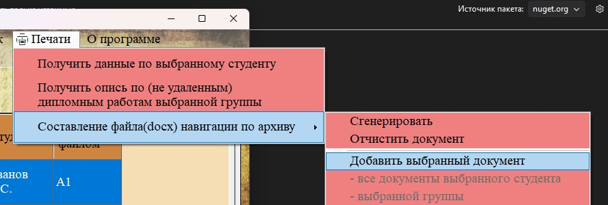
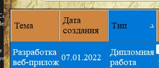
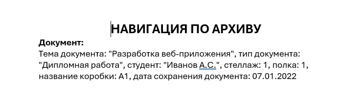

Функция «Добавить выбранный документ» позволяет включить в навигационный файл информацию о конкретном документе, который вы выделили в таблице. Это полезно, когда нужно найти в архиве один или несколько конкретных документов.

Рис. 1. Пункт «Добавить выбранный документ» в подменю навигации
Где доступна эта функция
Пункт меню «Добавить выбранный документ» становится доступным (активным) только при нахождении в следующих разделах:
— Документы работ (раздел 2.2.4) — обычные документы
— Удалённые документы (раздел 2.2.5) — документы с истёкшим сроком хранения

Рис. 2. Выделите нужный документ в таблице (один или несколько)
Порядок действий
1. Перейдите в раздел «Документы работ» или «Удалённые документы» через главное меню.
2. Выделите одну или несколько строк с нужными документами (для множественного выбора используйте клавишу Ctrl или Shift).
3. В главном меню выберите «Печати → Составление файла навигации по архиву → Добавить выбранный документ».
4. После добавления в статусной строке появится сообщение (неявное, сам факт добавления). Пункты меню «Сгенерировать» и «Отчистить документ» станут активными.
Что добавляется в навигационный файл
Для каждого добавленного документа в итоговый файл будет включена следующая информация:

| Поле | Пример значения |
|---|---|
| Тема документа | «Анализ финансовой отчётности предприятия» |
| Тип документа | Дипломная работа |
| Студент | Иванов Иван Иванович |
| Стеллаж | 3 |
| Полка | 2 |
| Название коробки | Box:3-2 |
| Дата сохранения | 15.06.2023 |